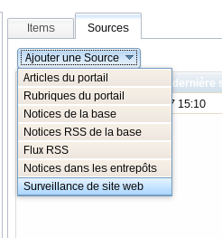
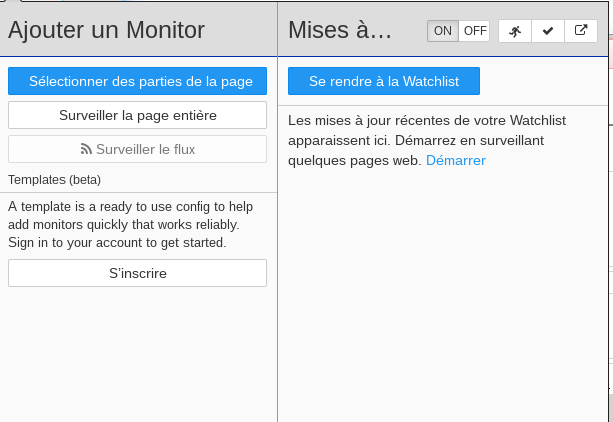
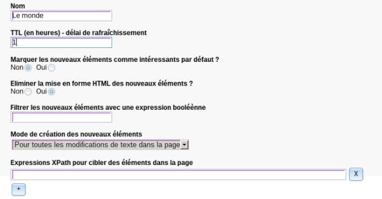

Exemple de surveillances
ExempleSurveiller des sites Internet⚓

Pour ajouter une source de type surveillance de type web, nous vous conseillons d'installer l'extension Distill à Mozilla Firefox, qui se présentera dans la barre d'outils du navigateur.
Exemple
Ici nous souhaitons surveiller Actualités en continu du site Le Monde.
Exemple
Cliquer sur l'icone de Distill, puis sur l'onglet Sélectionner des parties de la page

Exemple
Sélectionner le titre de la rubrique. En bas de votre navigateur, un lien Xpath, est donné.
Exemple
De retour dans PMB, au niveau du paramétrage de votre source, veuillez copier-coller les différents liens XPath.

Exemple
Le premier lien doit correspondre au Xpath du résumé de votre rubrique
Le deuxième lien doit correspondre au Xpath du titre.
Le troisième lien doit correspondre au Xpath du lien URL.